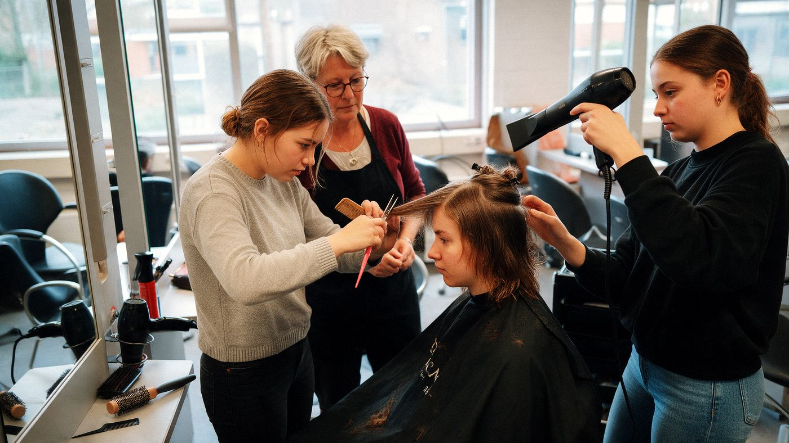

Home › Opleidingen › Haar, beauty & verzorging › Barbier

Wat is Barbier?
Barbier is een opleiding op mbo (niveau 2). Je leert mannenhaar knippen en baarden scheren en verzorgen. Je werkt met tondeuse, schaar en scheermes in een barbershop.
Wat kun je ermee?
- Barbier
- Herenkapper
- Medewerker barbershop
Wat heb je ervoor nodig?
- Voor mbo: een vmbo-diploma. Met de basisberoepsgerichte leerweg (bb) ga je naar niveau 2, met kader, gemengd of theoretisch kun je naar niveau 3 of 4
- Elk vmbo-profiel is goed. Het sluit mooi aan als je Dienstverlening en producten of Zorg en welzijn hebt gedaan. Soms vraagt een opleiding een bepaald vak.
- Het helpt als je graag met mensen omgaat, handig bent met je handen en oog hebt voor stijl en verzorging.
Selectie of toelatingsexamen?
Meestal niet. Heb je de juiste vooropleiding en meld je je op tijd aan, dan mag je in principe beginnen.
Hoe lang duurt het?
mbo: 1 tot 4 jaar, afhankelijk van het niveau. Je kunt het volgen als bbl (werken en één dag naar school) en bol (vooral leren, met stages).
Bij bol ga je vooral naar school en loop je stage. Bij bbl werk je bij een leerbedrijf en ga je één dag per week naar school; je verdient dan al salaris. Het diploma is hetzelfde. Meer over bol en bbl
Waar kun je Barbier studeren?
Bij 29 scholen, onder andere in 'S-Gravenhage, 'S-Hertogenbosch, Almelo, Amersfoort, Amsterdam, Apeldoorn, Arnhem, Breda, Den Helder, Deventer, Doetinchem en Dordrecht:
- Albeda
- Alfa-college
- Aventus
- Barber School Amsterdam
- Curio
- Da Vinci College
- Drenthe College
- Firda
- Gilde Opleidingen
- Graafschap College
- Hair Kappersopleiding
- Kappersacademie Roermond
- Koning Willem I College
- Landstede
- MBO Amersfoort
- mboRijnland
- Noorderpoort
- Rijn IJssel
- ROC A12
- ROC Midden Nederland
- ROC Mondriaan
- ROC Nijmegen
- ROC van Amsterdam
- ROC van Twente
- Scalda
- Summa College
- VISTA college
- Vonk
- Zadkine
Verwante opleidingen
- Kapper
- Allround Kapper
- Allround barbier
- Allround Schoonheidsspecialist
- Salonmanager kapper
- Schoonheidsspecialist
- Salonmanager barbier
- Haarstylist dame
- Haarstylist heren
- Salonmanager dame
Past Barbier bij jou? In de app zie je hoe ver elke school van je huis is, wanneer de open dagen zijn en wat je Plan B is. Je kunt hem ook op je lijst zetten.
Bekijk in de appDoe de Padvinder